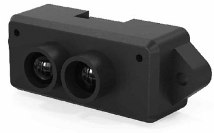
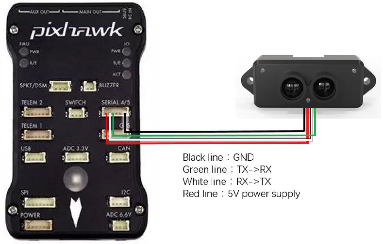

Benewake TFmini / TFmini Plus lidar¶
The Benewake TFmini lidar and TFmini Plus have an indoor range of 12m, an outdoor range of 7m and weigh only (5g).
More details on both these lidar can be found in the benewake.com’s downloads area
Note
Support for this sensor is available in Copter-3.6 (and higher) and Rover-3.4 (and higher)
Where to Buy¶
Connecting to the Autopilot¶
For a serial connection you can use any spare Serial/UART port. The diagram below shows how to connect to SERIAL4.
If the SERIAL4 port on an autopilot is being used then the following parameters should be set for the first rangefinder:
SERIAL4_PROTOCOL = 9 (Lidar)
SERIAL4_BAUD = 115 (115200 baud)
RNGFND1_TYPE = 20 (Benewake-Serial)
Note
RNGFND1_TYPE = 20 works for TFminiPlus or TFmini, via its UART connection. If TFminiPlus is connected via I2C to the autopilot, use RNGFND1_TYPE = 25 (Benewake TFminiPlus-I2C) and also set RNGFND1_ADDR = 16 (I2C Address of lidar in decimal). The sensor’s default I2C address is 0x10 hexadecimal which is 16 in decimal.
RNGFND1_MIN_CM = 30 for TFmini, =10 for TFminiPlus
RNGFND1_MAX_CM = 1000 for indoor use OR 600 for outdoors. This is the distance in centimeters that the rangefinder can reliably read.
RNGFND1_GNDCLEAR = 10 or more accurately the distance in centimetres from the range finder to the ground when the vehicle is landed. This value depends on how you have mounted the rangefinder.
If instead the Telem2 port was used then the serial parameters listed above should instead be:
SERIAL2_PROTOCOL = 9
SERIAL2_BAUD = 115
Testing the sensor¶
Distances read by the sensor can be seen in the Mission Planner’s Flight Data screen’s Status tab. Look closely for “sonarrange”.